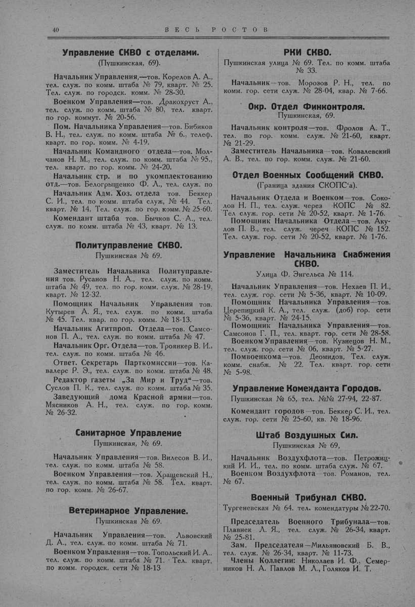

Лист источника 90
Скан

Распознанный текст
40 В Е С Ь Р О С Т О В
Управление СКВО с отделами.
(Пушкинская, 69).
Начальник Управления,—тов. Корелов А. А.,
тел. служ. по комм. штаба № 79, кварт. № 25.
Тел. служ. по городск. комм. № 28-30.
Военком Управления—тов. Дракохруст А.,
тел. служ. по комм. штаба № 80, тел. кварт.
по гор. коммут. № 20-56.
Пом. Начальника Управления—тов. Бибиков
В. Н., тел. служ. по комм. штаба № 6., телеф.
кварт. по гор. комм. № 4-19.
Начальник Командного отдела—тов. Мол-
чанов Н. М., тел. служ. по комм. штаба № 95.,
тел. кварт. по гор. комм. № 24-20.
Начальник стр. и по укомплектованию
отд.—тов. Белогрыщенко Ф. Л., тел. служ. по
Начальник Адм. Хоз. отдела тов. Беккер
С. И., тел. по комм. штаба служ, № 44. Тел.
кварт. № 14. Тел. служ. по гор. комм. № 25-60.
Комендант штаба тов. Бычков С. А., тел.
служ. по комм. штаба № 43, кварт. № 13.
Политуправление СКВО.
Пушкинская № 69.
Заместитель Начальника Политуправле-
ния тов. Русанов Н. А., тел. служ. по комм.
штаба № 49, тел. по гор. комм. служ. № 28-19,
кварт. № 12-32.
Помощник Начальник Управления тов.
Кутырев А. Я., тел. служ. по комм. штаба
№ 45. Тел. квар. по гор. комм. № 18-13.
Начальник Агитпроп. Отдела—тов. Самсо-
нов П. А., тел. служ. по комм. штаба № 47.
Начальник Орг. Отдела—тов. Троянкер В. И.,
тел. служ. по комм. штаба № 46.
Ответ. Секретарь Парткомиссии—тов. Ка-
валерс Р. Э., тел. служ. по комм. штаба № 48.
Редактор газеты „За Мир и Труд“—тов.
Суслов П. К., тел. служ. по комм. штаба № 35.
Заведующий дома Красной армии—тов.
Мясников А. Н., тел. служ. по гор. комм.
№ 26-32.
Санитарное Управление
Пушкинская, № 69.
Начальник Управления—тов. Вилесов В. И.,
тел. служ. по комм. штаба № 58.
Военком Управления—тов. Хращевский Н.,
тел. служ. по комм. штаба № 58. Тел. кварт.
по гор. комм. № 26-67.
Ветеринарное Управление.
Пушкинская № 69.
Начальник Управления—тов. Львовский
Д. А., тел. служ. по комм. штаба № 71.
Военком Управления—тов. Топольский И. А..
тел. служ. по комм. штаба № 71. Тел. кварт,
по комм. городск. сети № 18-13
РКИ СКВО.
Пушкинская улица № 69. Тел. по комм. штаба
№ 33.
Начальник—тов. Морозов Р. Н., тел. по
комм. гор. сети служ. № 28-04, квар. № 7-66.
Окр. Отдел Финконтроля.
Пушкинская, 69.
Начальник контроля—тов. Фролов А. Т.,
тел. по гор. комм. служ. № 21-60, кварт.
№ 21-29.
Заместитель Начальника—тов. Ковалевский
А. В., тел. по гор. комм. служ. № 21-60.
Отдел Военных Сообщений СКВО.
(Граница здания СКОПС‘а).
Начальник Отдела и Военком—тов. Соко-
лов Н. П., тел. служ. через КОПС № 82.
Тел служ. гор. сети № 20-52, кварт. № 1-76.
Помощник Начальника Отдела—тов. Аку-
лов П. В., тел. служ. через КОПС № 152.
Тел. служ. гор. сети № 20-52, кварт. № 1-76.
Управление Начальника Снабжения
СКВО.
Улица Ф. Энгельса № 114.
Начальник Управления—тов. Нехаев П. И.,
тел. служ. гор. сети № 5-36, кварт. № 10-09.
Помощник Начальника Управления—тов.
Церепицкий К. А., тел. служ. (доб) гор. сети
№ 5-36, кварт. № 24-15.
Помощник Начальника Управления—тов.
Самсонов Г. П., тел. кварт. гор. сети № 28-58.
Военком Управления—тов. Кузнецов Н. М.,
тел. служ. гор. сети № 06, кварт. № 5-27.
Помвоенкома—тов. Деомидов, Тел. служ.
комм. снабж. № 22. Тел. кварт. гор. сети
№ 5-98.
Управление Коменданта Городов.
Пушкинская № 65, тел. №№ 27-94, 22-87.
Комендант городов—тов. Беккер С. И., тел.
служ. гор. сети № 25-60, кв. № 18-96.
Штаб Воздушных Сил.
Пушкинская № 69,
Начальник Воздухфлота—тов. Петрожиц-
кий И. И., тел. по комм. штаба служ. № 67.
Военком Воздухфлота—тов. Романов, тел.
№ 67.
Военный Трибунал СКВО.
Тургеневская № 64. тел. комендатуры № 22-70.
Председатель Военного Трибунала—тов.
Плавнек Л. Я., тел. служ. № 26-34, кварт.
№ 25-81.
Зам. Председателя—Мильяновский Б. В.,
тел. служ. № 26-34, кварт. № 11-73.
Члены Коллегии: Николаев И. Ф., Семер-
ников Н. А. Павлов М. Л., Голяков И. Т.